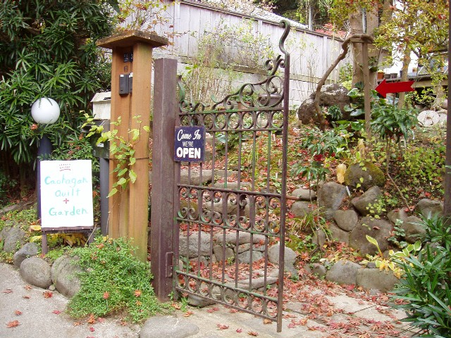

CaohaganQuilt+Garden 「カオハガンキルト＋ガーデン」

2009年11月25日、カオハガンキルトの専門のお店がオープンしました。
カオハガンの島民が手作りしたキルトやクラフト、キルトに使用している布を販売いたします。
キルト展では販売していないクッションカバー等も販売しています。
鎌倉は四季折々の美しい自然でいっぱいの所です。
海あり山ありでその中でも長谷観音・大仏のお膝元にあるCaohaganQuilt+Gardenは、自然に囲まれた、鎌倉独特の環境を感じていただけると思います。
鎌倉散策の後にでもぜひお立ち寄りください。
場所：神奈川県鎌倉市長谷3-3-3
電話：090-6524-7117（11:00～17:00）
営業時間：11:00～17:00
営業日：金・土 ※営業日変更となりました。ご了承ください。
（※臨時でお休みの時もあります。カオハガンキルト公式ホームページhttp://caohagan.net/でご確認ください。）
アクセス：
江ノ電長谷駅下車。
大仏方面にしばらく行き、左側「雷神堂」（おせんべい屋さん）の先を左折。道なりに進み、最初の角（鎌倉能舞台手前）を右に曲がり、道なりに進む。
突き当たりを右に行く（正面にアパートあり）すぐに左に曲がる（ここから細い道にて車は入れません）。
大きな地図で見る
CaohaganQuilt公式ホームページ：
http://caohagan.net/
（キルト展等、最新情報はこちらをご覧ください）